Upgrading to Drupal 8 using the UI
Now that the second Drupal 8 release candidate (RC2) is available (with a significant fix for those upgrading from Drupal 6), it's time to start planning for your upgrade from Drupal 6 or Drupal 7. As I previously wrote, the migration system is "experimental" in 8.0, and at this time (mid-October 2015) the tools for upgrading are in a contributed module, Drupal Upgrade. The plan is that the upgrade path will be fully supported in core for Drupal 8.1 - to reach that goal, however, we need the path to be tested on a wide variety of sites in the meantime. So, we encourage everyone with a Drupal 6 or Drupal 7 site to start testing the upgrade path today - you don't want Drupal 8.1 to come out and only then discover your site has some quirk that's not fully accounted for. Even better, you might fight the upgrade path works just fine for your site and you can upgrade in the Drupal 8.0 timeframe! The current documentation for performing your upgrade from Drupal 6 or 7 to Drupal 8 is on drupal.org - I'll walk through the process as it exists today, but should you be referring to this blog post after October 2015, be sure to review the official documentation for any changes. This post explains running the upgrade process through the Drupal 8 web interface - if you'd prefer to use Drush, please see Upgrading to Drupal 8 using Drush.
Preparing your site for the upgrade
The first thing you need is a fresh Drupal 8 site. Installing the code base is too environment-specific to go through here, but it is recommended that you use the Minimal install profile to give yourself the most flexibility in your configuration (and the blankest slate on which to write your legacy data). Note that the Minimal profile installs the Stark theme by default - your first stop after installation will probably be Administration->Appearance to pick a more substantial theme (the screenshots below reflect Bartik). And speaking of screenshots, a reminder - the migration support in core is "experimental", but this UI is at an earlier stage of experimentation and is still undergoing significant UX work, so what you see below may not be exactly what you see when you try the process yourself. Now, it's important to understand that the upgrade process does not automatically enable modules on your Drupal 8 site - it will only perform upgrade operations for modules enabled on your source site when the destination module for that data is enabled in Drupal 8. So, at this point, be sure to enable all modules in Drupal 8 that you were using in your legacy site (plus any other Drupal 8 modules you're planning on using): 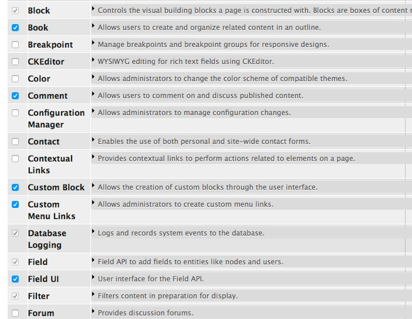 The contributed Drupal Upgrade module also needs to be installed and enabled on the Drupal 8 site. At Adminstration->Extend, click "Install new module": 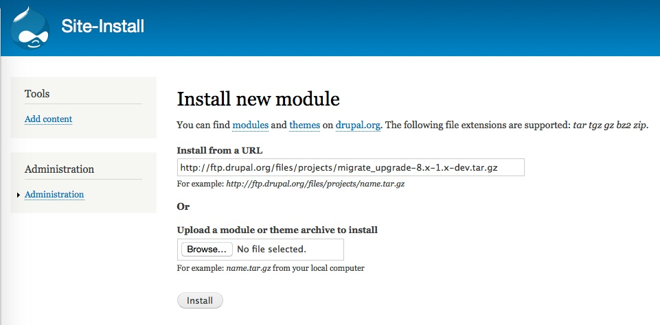 Back to the Extend page, enable this module as well as the Migrate and Migrate Drupal modules it requires: 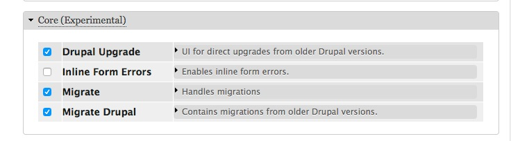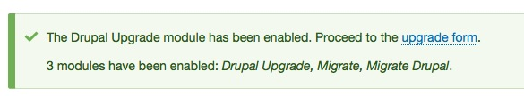
Configuring and reviewing the upgrade
Have you proceeded? You should now see the following page: 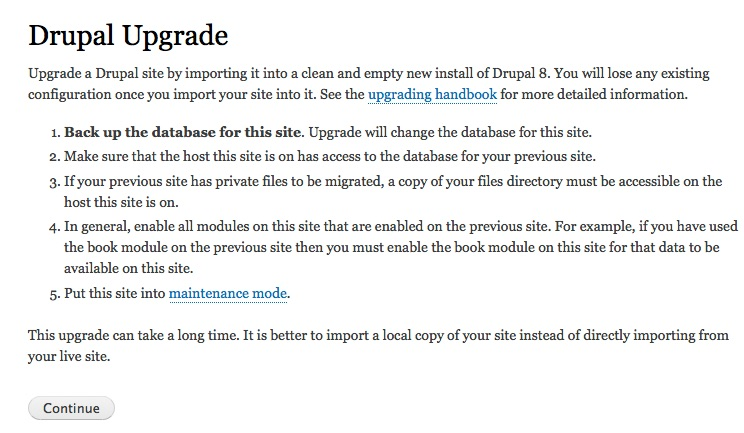 Now is an excellent time to backup your Drupal 8 database - as we've said, the upgrade support is experimental, and the quickest way to return to square one if anything goes wrong is to restore your backup. If you've just created the Drupal 8 site and are working alone on it, there's no need for maintenance mode, which is a purely cautionary step. Continuing: 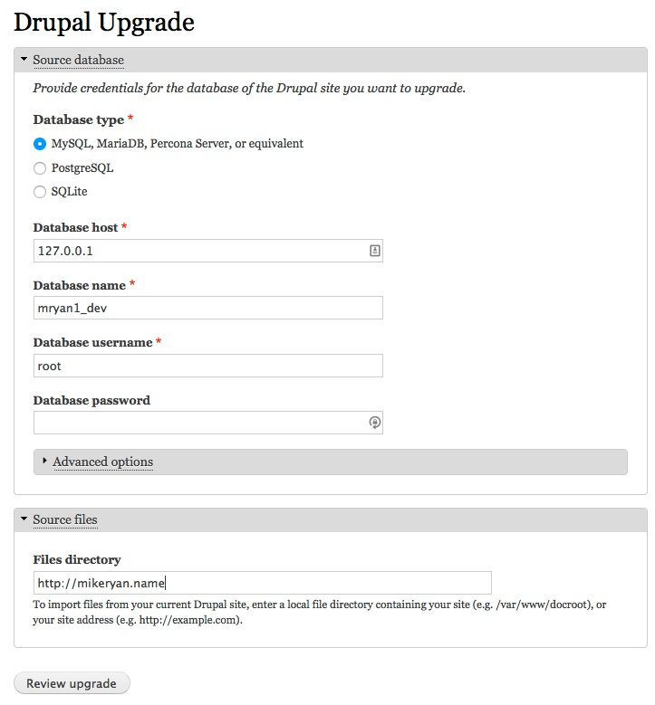 The new Drupal 8 site needs to have access to a copy of your existing site's database, as well as access to your files. If you have only a public files directory on your site, the upgrade process can pull them directly over the web; however, if you have a large volume of file data it will be more efficient to make a copy of the files directory directly on your D8 server (and this is necessary for private files). Note that Drupal 7 allows you to have separate public and private file directories - the ability to specify both of these through the UI has not been implemented as of this writing. Once you've entered the information for your existing site and clicked Review upgrade, the source database is analyzed and enabled modules with upgrade paths are aligned with the corresponding modules that are enabled in Drupal 8 (note this page is the most likely one to be redesigned in the very near future): 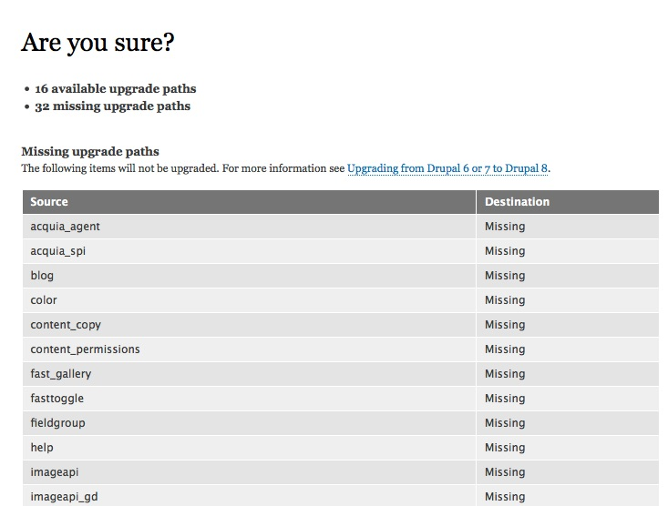 First, this page lists modules enabled on the source site which have no defined upgrade path. There are various reasons for a source module to be listed here:
- The module simply has no content or configuration that needs to be individually migrated. For example, the Drupal 6 blog module simply defined a node (content) type of 'blog', and those blog nodes are being migrated via the node module's migrations, so the blog module does not need its own migration path.
- A migration path exists, but the destination module is not enabled (and perhaps, for contributed modules, not even present). For example, if I had not enabled 'book' in Drupal 8, it would have been listed here.
- There is configuration or content for the module that can and should be upgraded, the module is enabled, but the module has not implemented an upgrade path (you are most likely to see this situation with contributed modules still being ported to Drupal 8).
For now, you can simply proceed - the upgrade process is repeatable, so if you enable a destination module, or an existing module adds an upgrade path, returning to /upgrade and running the upgrade process again will pick up the new data. Lower on the page, the modules being upgraded are reported: 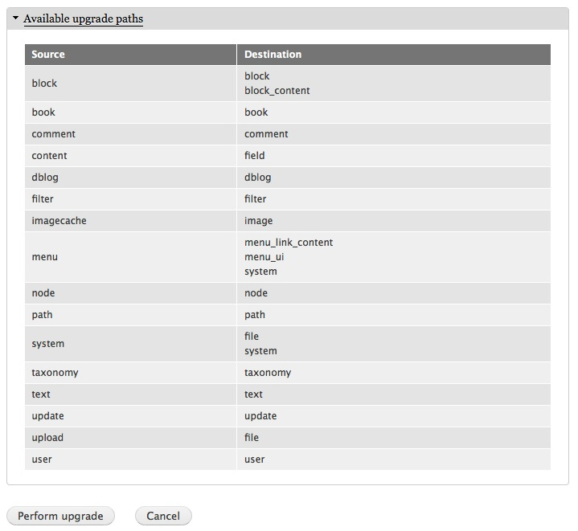 As you can see, there is not necessarily a one-to-one correspondence between the modules in your Drupal 6 or Drupal 7 site and the Drupal 8 modules that manage the same data. For example, custom blocks have been moved out of the block module into a new block_content module. At this point, clicking Perform upgrade will - surprise! - perform the upgrade: 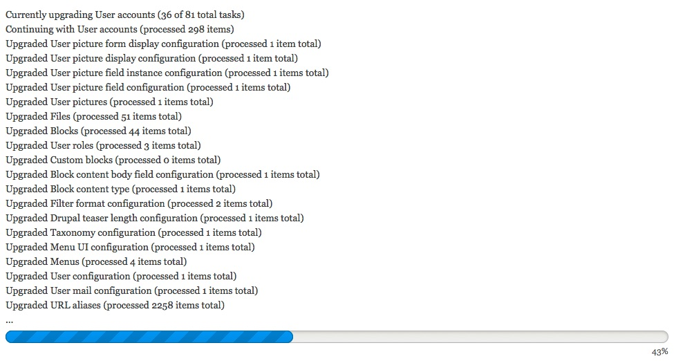 At this point it's worth mentioning that internally the individual tasks that are run to perform the upgrade are called "migrations", and there may be multiple migrations involved in a given module's upgrade path, to handle different kinds of content and configuration managed by that module. The feedback is thus per-migration, not per-module. If all goes well, you are delivered to your home page: 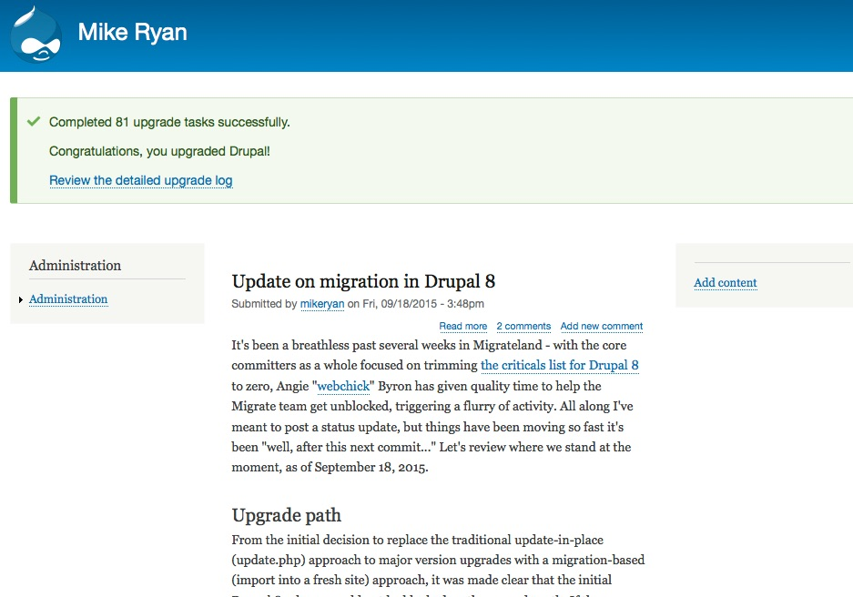 which hopefully (allowing for theming) shows the same content as your old home page: 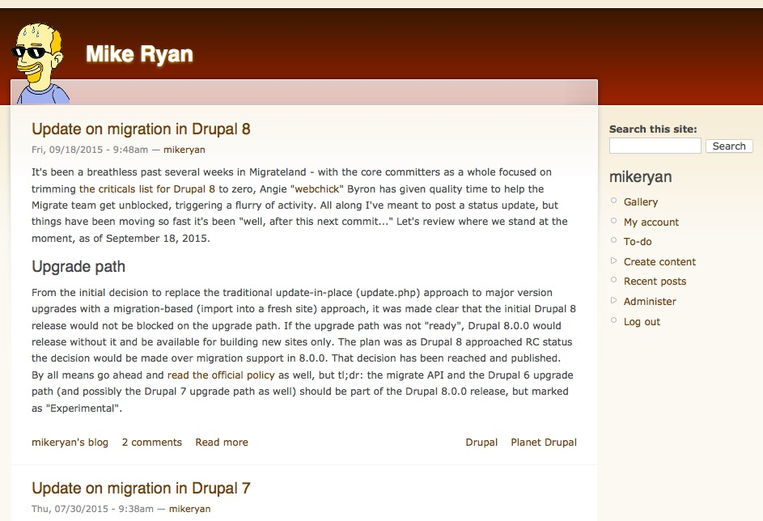 Details on the upgrade process are logged to the watchdog: 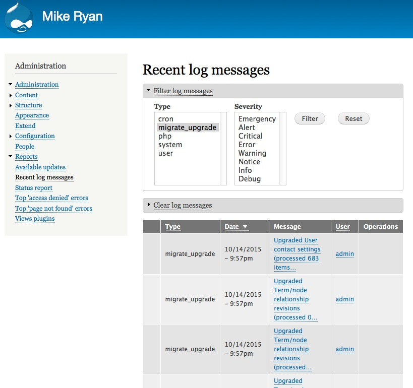
Starting over
If everything you wanted to upgrade came over perfectly and there are no lagging modules to worry about, congratulations! If there's still more to do - a newly-installed contrib module with an upgrade path, a core module you skipped the first time, or for that matter new content added on your existing site which you want to pull over - you can rerun the upgrade process to pull over only things which were not previously imported. Or, if you're not happy with the results, you can start from scratch. First, return to the upgrade page (example.com/upgrade): 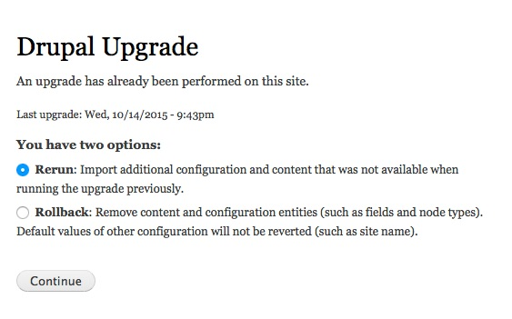 As you can see, you have two options. The Rerun option will run through much the same process as you did originally (skipping the prompt for credentials and file location, because it remembers that from the first time), and if any new content was added for modules you previously upgraded, or new upgrade paths are now available, those will be imported now. Rollback allows you to return to square one - mostly. It will delete all content that was imported, and it will also delete all the configuration entities that were created, but will not restore simple configuration. The distinction is:
- Configuration entities are structured sets of configuration which may have multiple instances - for example, a field's configuration or a content type's configuration is a configuration entity. Because these are created by the upgrade process, they can be deleted by the rollback process.
- Simple configuration is singleton settings such as the site name - there is a single value without internal structure. For simple configuration, there is already a default value (or a custom value, if you have manually configured the site) before the upgrade is executed. Because the pre-upgrade values are not preserved (there is no revisioning of configuration), they cannot be restored when rolling back the upgrade.
If you want to be absolutely sure you're returning to a vanilla installation, you're best off restoring the backup you took before upgrading (you did do that backup, right?). If you had a lot of content processed by the upgrade process, you'll also find it much faster to restore that backup. That being said, when experimenting with the upgrade process with a modestly-sized site, you may find the rollback functionality helpful: 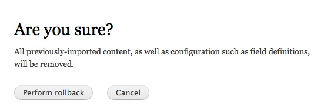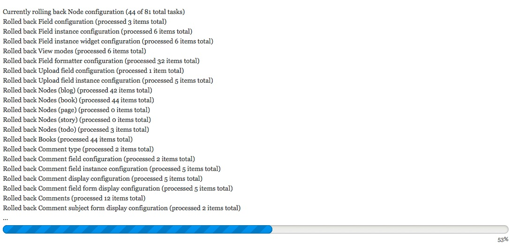
How'd it go?
So, once again, the upgrade path in Drupal core for 8.0 is experimental, and the UI more so - we need your feedback to tighten them up and make them fully supported for 8.1. If you ran into any problems in upgrading your site, or have suggestions for improving the process, please share them:
- If your problem or suggestion is specifically about the UI - the forms, the workflow, the messaging - then please open an issue in the Drupal Upgrade issue queue (being sure to check if it's already been reported, of course).
- If you had error messages while the upgrade process was running, or something was not imported correctly into your site, please open an issue with the "migration system" component in the Drupal core issue queue (again, checking for previous reports).
If you're not sure where to report the issue, just pick one and don't sweat it - we'll move it if necessary. Thanks!
Comments
Additional upgrades no longer
Additional upgrades no longer supported in Drupal 8.1.1.
Drupal Upgrade
An upgrade has already been performed on this site. To perform a new migration, create a clean and empty new install of Drupal 8. Rollbacks and incremental migrations are not yet supported through the user interface. For more information, see the upgrading handbook.
Last upgrade: May 9, 2016 - 20:27
See
See https://www.drupal.org/node/2687843
migration of books and book
migration of books and book pages
Hello,
when will it be possible to migrate books and book pages, please.
Thank you in advance for your kind answer
Michael
You don't mention if you're
You don't mention if you're migrating from Drupal 6 or Drupal 7. Book hierarchies should work for Drupal 6 - for Drupal 7, while the book pages (which are simply normal nodes) should migrate, the book hierarchy is not yet done - see https://www.drupal.org/node/2409435.
Sorry, I noticed only after
Sorry, I noticed only after it was sent. I meant from 7 to 8.
Thanks for the answer and the link. I will stay tuned...